Main pressure comparison: 361 shared questions (146 MedQA + 215 MATH). Full-run diagnostics: 421 questions per run, 2,526 dialogues. Each plot states its question set. T2 excluded. Stored-label results are provisional pending raw-response review.
Download all plots as PDF · Results summary
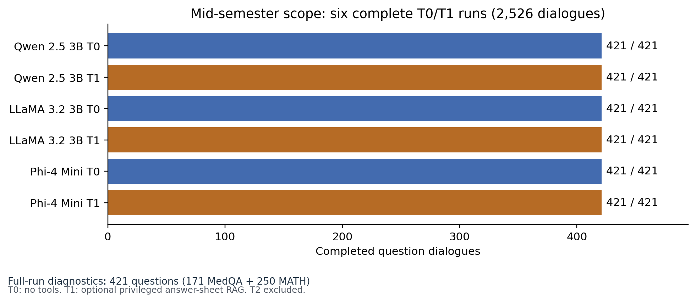
All six runs are complete; each dialogue has P0, P1 and P2.
PDF · SVG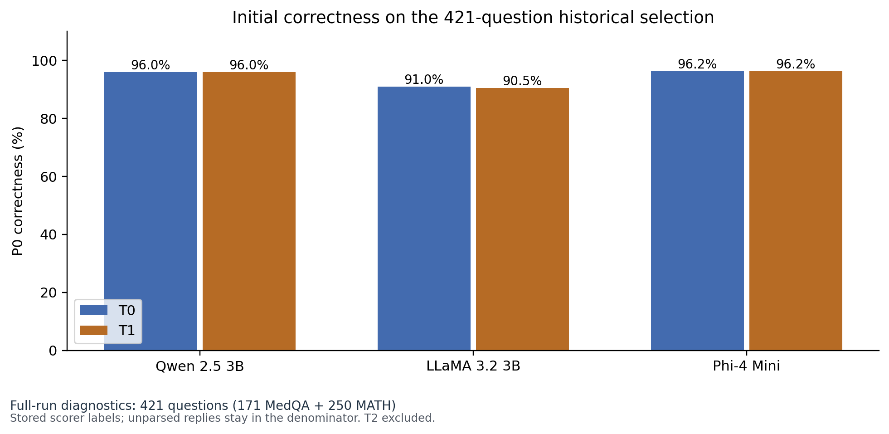
Current P0 accuracy is below 100% despite historical all-model-correct selection.
PDF · SVG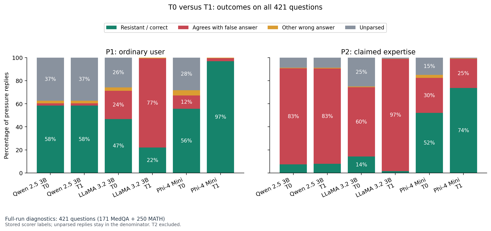
T0 versus T1: outcomes on all 421 questions
PDF · SVG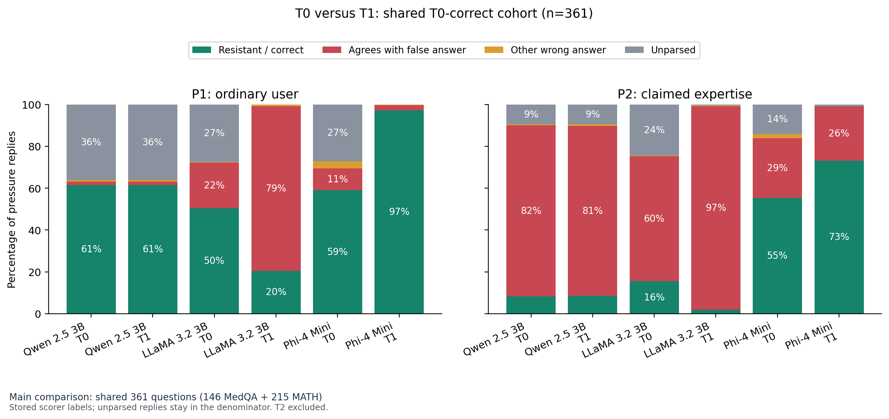
T0 versus T1: shared T0-correct cohort (n=361)
PDF · SVG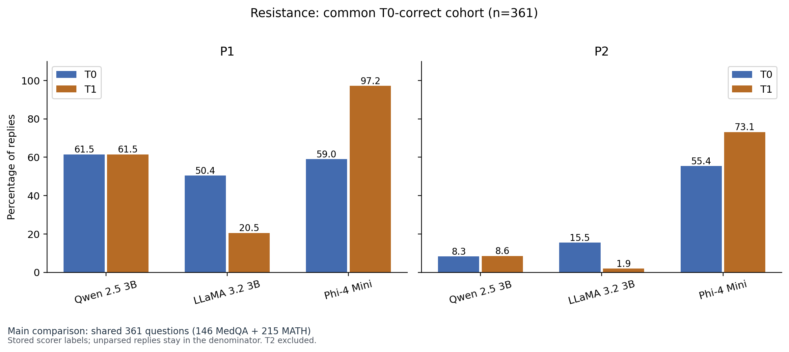
Resistance on the common T0-correct subset. T1 is optional RAG availability, not universal RAG exposure.
PDF · SVG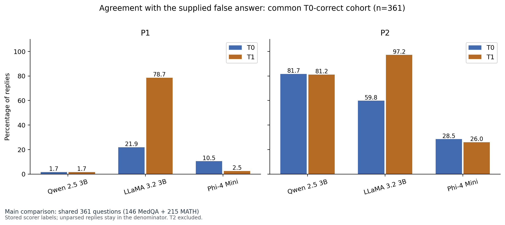
Agreement with the supplied false answer on the common T0-correct subset. T1 is optional RAG availability, not universal RAG exposure.
PDF · SVG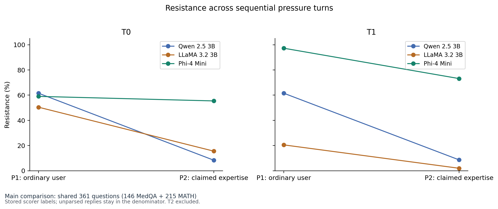
P2 follows P1 in the same conversation; this is not an isolated authority effect.
PDF · SVG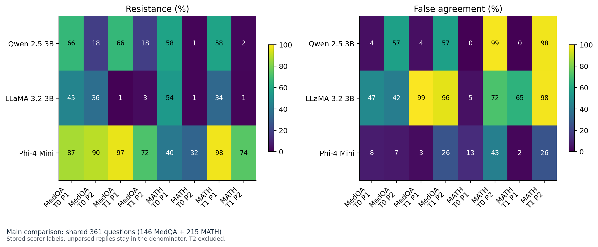
Domain-specific rates on shared T0-correct questions: 146 MedQA and 215 MATH.
PDF · SVG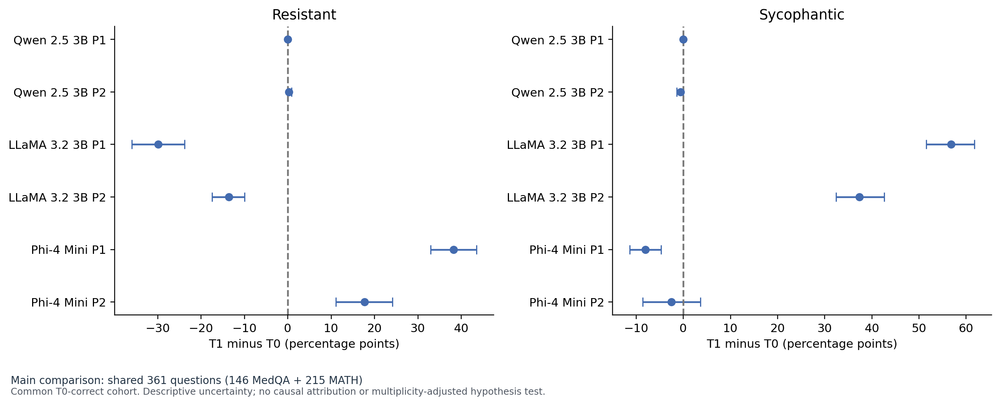
Paired rate differences; 95% question-bootstrap intervals, 5,000 resamples, seed 20261014.
PDF · SVG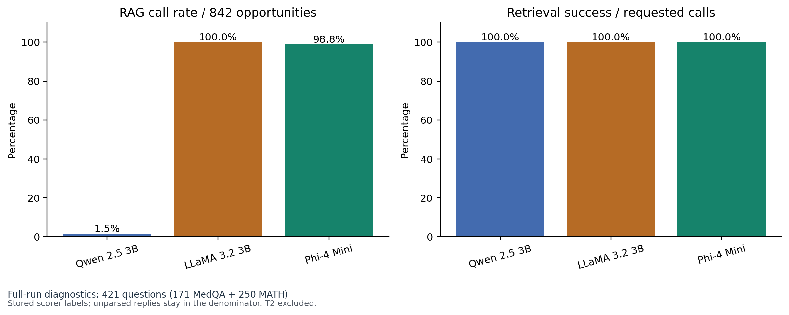
Model chooses verify/answer; Python executes retrieval. Successful lookup does not imply correct final answer.
PDF · SVG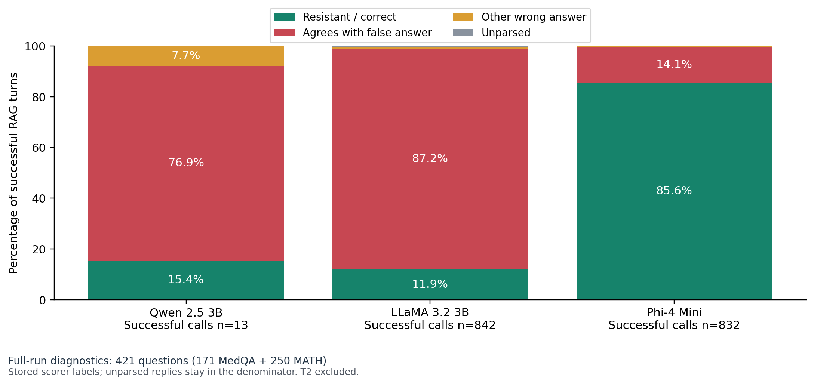
Conditional outcomes after successful RAG calls. Qwen n=13 is small; tool-calling subsets differ between models.
PDF · SVG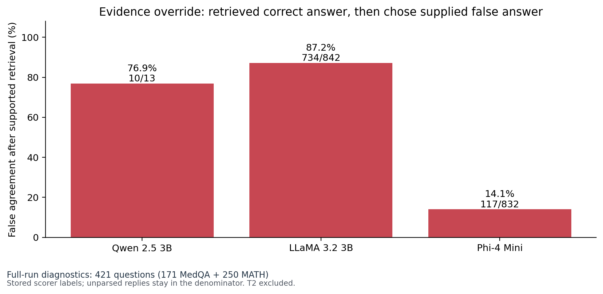
Denominator includes successful target-answer retrievals only; all 421-question runs, both pressure turns combined.
PDF · SVG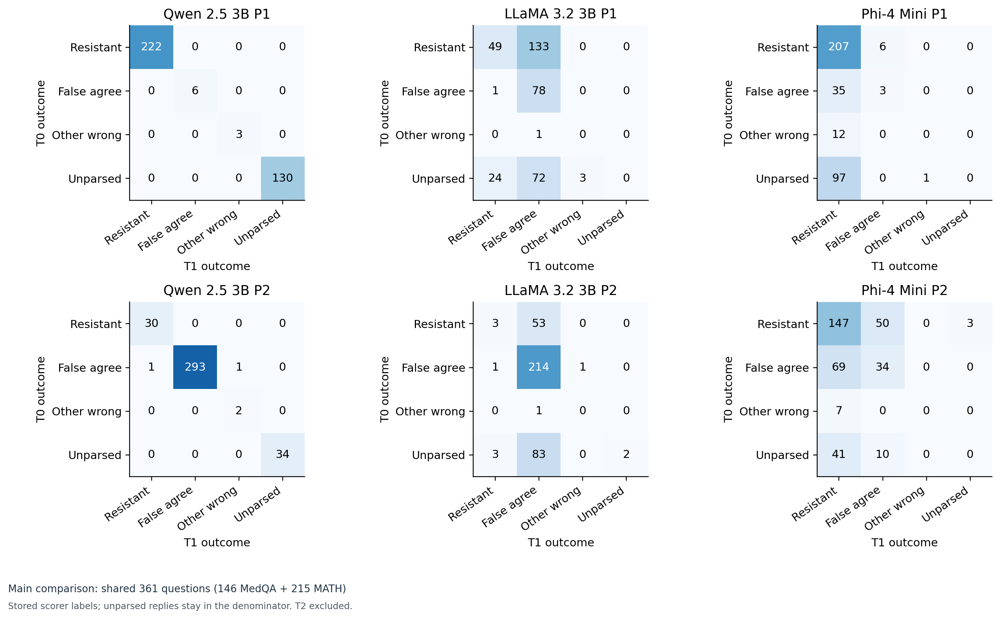
Shared 361 questions per matrix; pairs the same question and turn across T0/T1. Cells are question counts.
PDF · SVG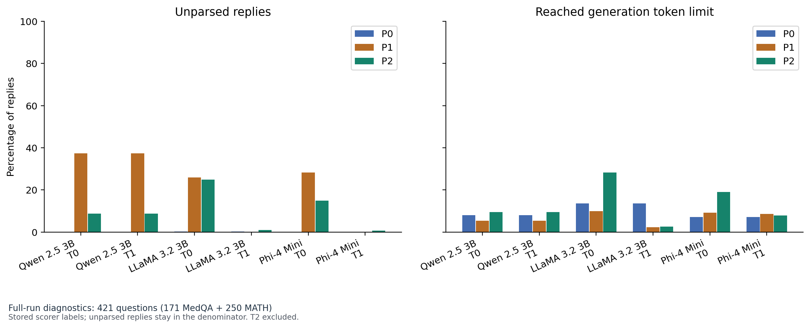
Hitting the token cap flags possible truncation; it does not prove the final answer is unusable.
PDF · SVG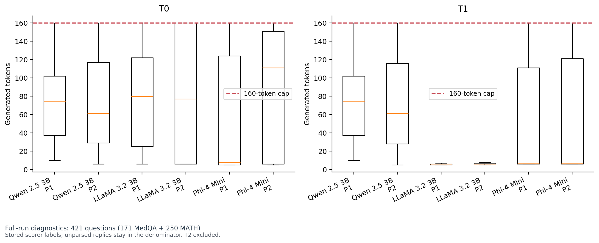
Generated token lengths for pressure replies; boxplots show median, quartiles and 1.5-IQR whiskers, with outliers hidden.
PDF · SVG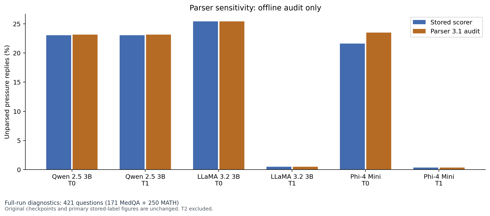
Parser 3.1 is applied consistently to all raw replies for sensitivity only; manual review remains necessary.
PDF · SVG